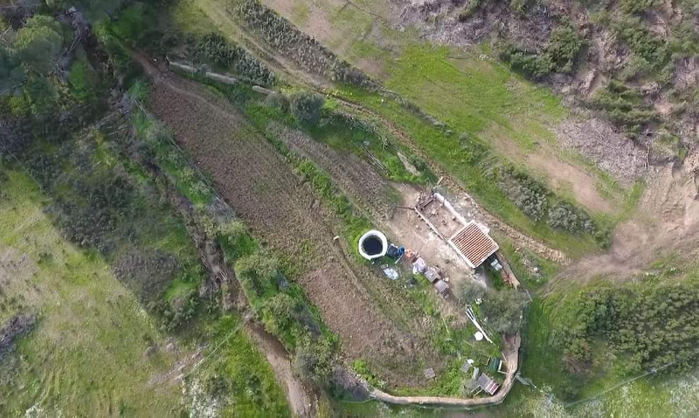

Estado do Sistema
Energia
1.0
kWp Solar
Baterias
360
Ah Banco
Sintropia
630
m² Ativos
Espécies
+40
Plantadas
Operação
100%
Off-Grid

O Projeto
📍 Design de Ciclo Fechado
O Wild Alentejo opera numa propriedade de 1000m² em Mértola, focada em reverter a desertificação através de engenharia regenerativa.
Gerimos recursos hídricos, energéticos e biológicos com precisão técnica para garantir a viabilidade da vida num ambiente semiárido, sem depender de qualquer rede externa.
Cada sistema foi desenhado para trabalhar em sinergia: os painéis alimentam a bomba de água, que irriga a floresta, que protege o solo, que retém humidade para o próximo ciclo.
⚙️ Princípios de Operação
- ✔Soberania — Independência total de redes externas em energia, água e saneamento.
- ✔Termodinâmica — Orientação passiva a 140° SE para máxima eficiência solar.
- ✔Sintropia — Processos naturais de sucessão para acumular energia e água no solo.
- ✔Frugalidade — Redução drástica de consumo via design inteligente com 15m² de área habitável.
- ✔Monitorização — Sensores IoT em tempo real via Home Assistant e GitHub Gist.
Explorar o Sistema
IoT · Tempo Real
O Sistema
Sensores de temperatura e humidade em tempo real — 5 zonas monitorizadas.
Agricultura
Agrofloresta
Sucessão sintrópica, estratificação e gestão de biomassa em semiárido.
Campo
Logbook
Registo cronológico de intervenções, medições e observações do terreno.
Participar
Adote-me
Patrocine uma espécie e contribua para o ciclo de regeneração.
Visual
Galeria
Arquivo fotográfico do projeto e da evolução do terreno.
Produção Local
Loja
Mel cru, óleos essenciais e excedentes do ecossistema.